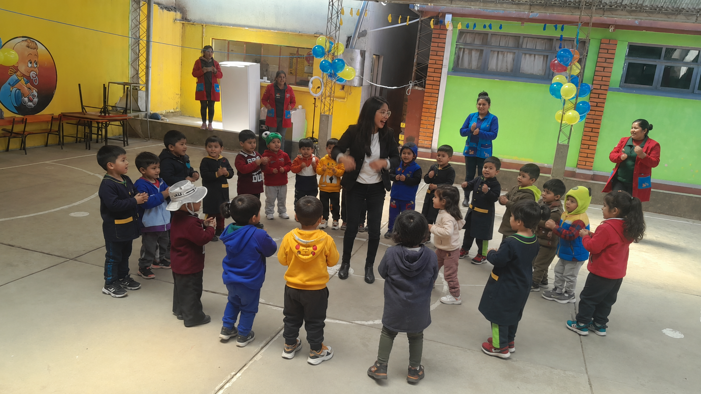

Genera impacto
Acompaña y apoya el desarrollo integral de niñas y niños.
Voluntariado Wawanakan
Acompaña, aprende y aporta al bienestar de la niñez.

Una experiencia con sentido
Acompaña y apoya el desarrollo integral de niñas y niños.
Conoce de cerca los desafíos que enfrenta la niñez en Bolivia.
Desarrolla empatía, compromiso, liderazgo y trabajo en equipo.
Al finalizar tu voluntariado recibirás un certificado por tus horas de servicio.
Tu talento también cuida
Apoya el aprendizaje, el juego, la psicomotricidad y el cuidado diario de niñas y niños, acompañando su crecimiento con amor, paciencia y alegría.
Contribuye al bienestar emocional, social y alimentario de los niños, promoviendo espacios seguros, saludables y llenos de buen trato.
Impulsa actividades de arte, música, manualidades, deportes y juegos educativos que despierten la imaginación, la confianza y la participación de cada niño.
Ayuda a visibilizar el trabajo de Wawanakan mediante redes sociales, fotografía, video, diseño y comunicación, mostrando historias que inspiran solidaridad.
Apoya en tareas administrativas, organización de actividades, campañas y eventos solidarios que fortalecen el trabajo institucional de la asociación.
Proceso claro y cuidadoso
Llena el formulario y cuéntanos quién eres, qué sabes hacer y cómo deseas apoyar a la niñez.
Revisaremos tu solicitud y tendrás una entrevista breve para conocer tu compromiso, responsabilidad y ganas de ayudar.
Si eres seleccionado, te contactaremos para coordinar tu participación y empezar esta experiencia que transforma vidas.